RadioLogic est un projet de formation médicale universitaire, destinée à des radiologues. Il s'agit d'un ensemble d'outils spécifiques:
- RadioLogicCreator est l'outil pour adapter des cas cliniques sélectionnés aux besoins de l'outil de formation
- RadioLogicArchive est le conteneur des cas cliniques de formation générés
- RadioLogicWeb est le site web public pour présenter et supporter le projet
- RadioLogicHelpBook est une documentation et guide d'usager pour le projet
- RadioLogicTutor est l'outil principal permettant une auto-formation et une auto-évaluation des étudiants. Il s'agit d'une application web optimisée pour fonctionner sur iPAD
RadioLogicCreator
L'outil existant est une app Mac programmée en Swift 3. Elle ne donne pas entièrement satisfaction et je suis en train d'évaluer plusieurs options, par ordre de priorité:
- simplifier l'app, l'adapter à Swift 4 et l'héberger dans l'AppStore. J'ai une certificationn de développement Apple.
- la convertir en plugin HOROS (Osirix)
- la transformer en application web, en utilisant l'API REST d'Orthanc et des scripts LUA
- la transformer en plugin Orthanc
RadioLogicArchive
Au début j'ai hébergé les cas cliniques dans des bouquets Amazon AWS S3 avec des fichiers JSON, contenant les listes des fichiers DICOM à télécharger. Ensuite je me suis orienté vers le serveur Orthanc, combiné avec un reverse-proxy Nginx (CORS), et j'ai exploré les solutions suivantes:
- OrthancPi
- OrthancMac
- Docker sur Synology, Mac, Windows et Debian
- Synology DSM 6.2 beta avec paquet Orthanc
Tout en gardant le serveur Orthanc comme archive dans un environnement en ligne, je me focalise actuellement sur l'utilisation d'archives DICOMDIR comprimées pour un usage hors-ligne. Je suis en contact avec Chris Hafey pour intégrer éventuellement cette option dans son cornerstoneWADOImageLoader.
RadioLogicWeb
Hébergé sur Amazon AWS S3, le site web www.radiologic.fr n'est pas encore public. J'ai programmé les contenus actuels manuellement avec Notepad++. Je n'ai pas encore choisi l'outil définitif permettant la gestion et la maintenance du site par des non-techniciens (personnel médical). Les options envisagées sont:
- Wordpress CMS
- GitHub Pages with Jekyll
- ???
RadioLogicHelpBook
L'OrthancBook me sert de référence pour rédiger le RadioLogicHelpBook.
RadioLogicTutor
J'ai changé plusieurs fois le nom de l'application centrale du projet. De RadioLogic, je suis passé par RadioLogicExam à RadioLogicTeacher et maintenant à RadioLogicTutor. J'hésite encore à retenir un nom définif.
Comme une image vaut mieux que mille mots, je présente le projet RadioLogicTutor avec des copies écrans.
L'application web fonctionne dans tous les navigateurs récents, mais elle est optimisée pour usage sur iPad en format paysage. Les deux premières images montrent l'installation sur iPAD.
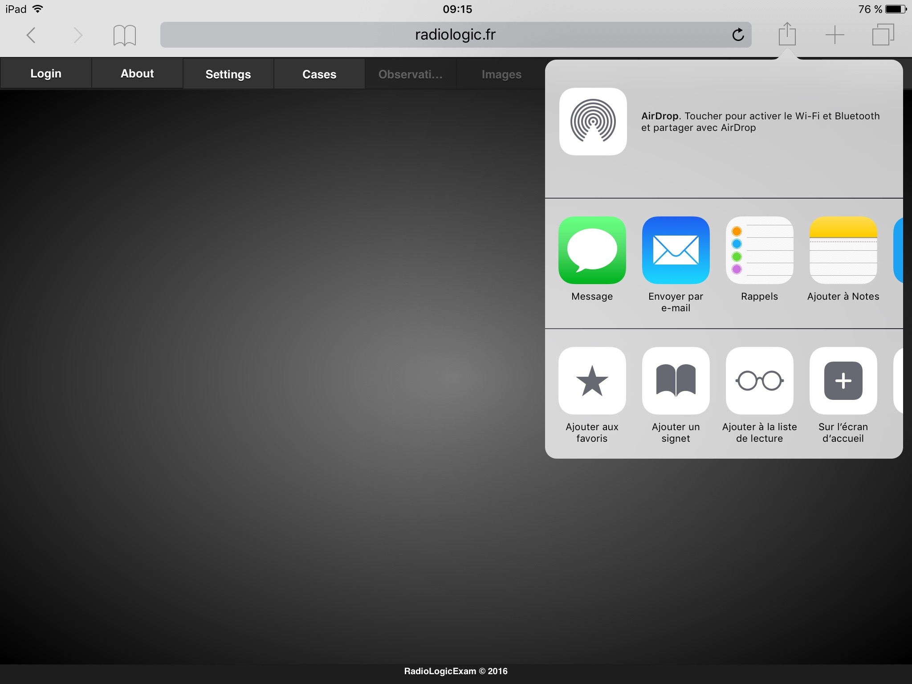 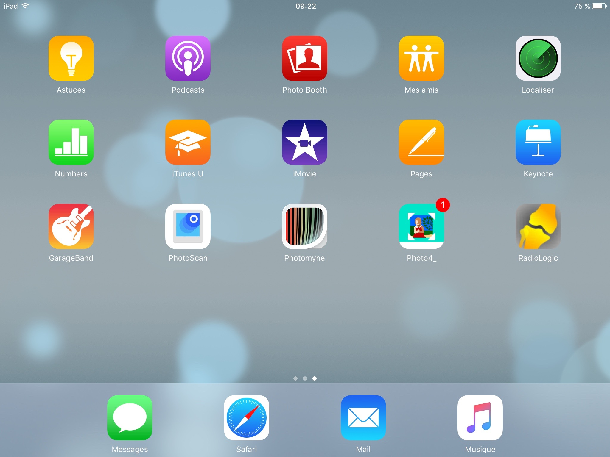Les usagers sont enregistrés dans le navigateur, jusqu'au maximum de 9. L'usager "admin" a les droits de supprimer des usagers et de faire un reset.
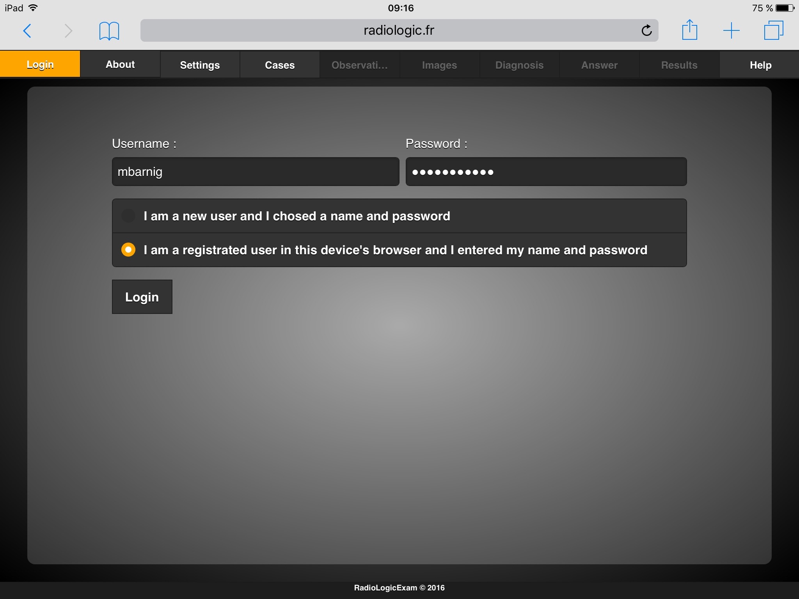Cette page est à actualiser.

La page définitive aura 3 choix pour la sélection de l'archive DICOM: DICOMDIR archive, serveur OrthancPI dans le réseau local ou adresse IP pour un autre serveur Orthanc local ou distant.
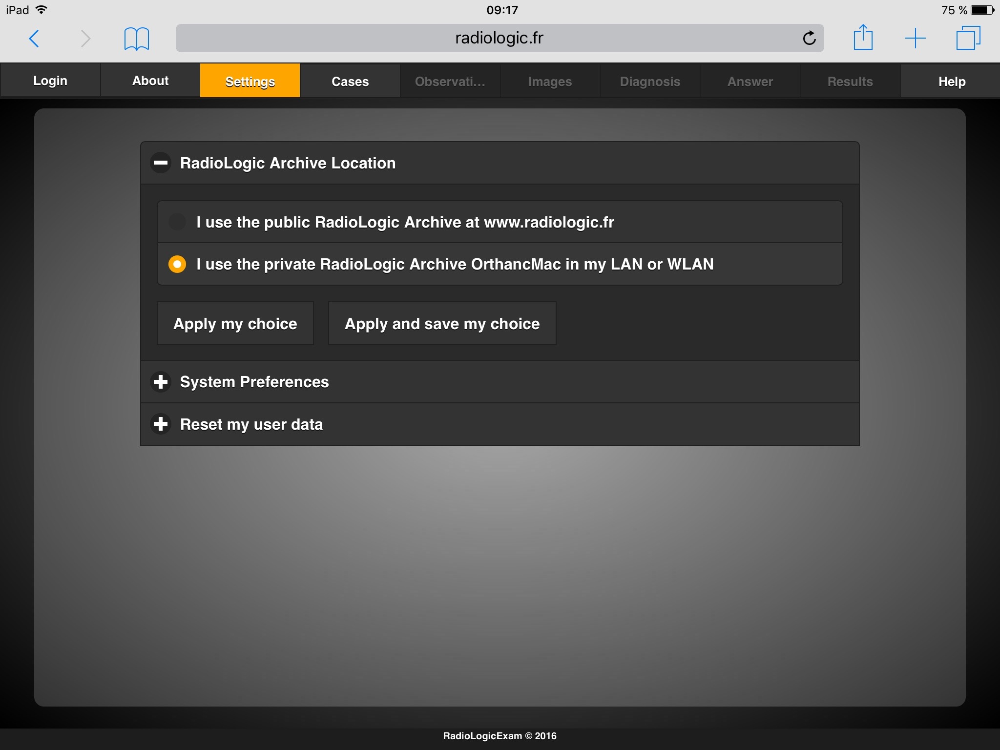Une session comprend plusieurs cas cliniques. Cette page est à adapter pour le contenu DICOMDIR.

Cette image DICOM contient des tags privés avec les choix du diagnostic.
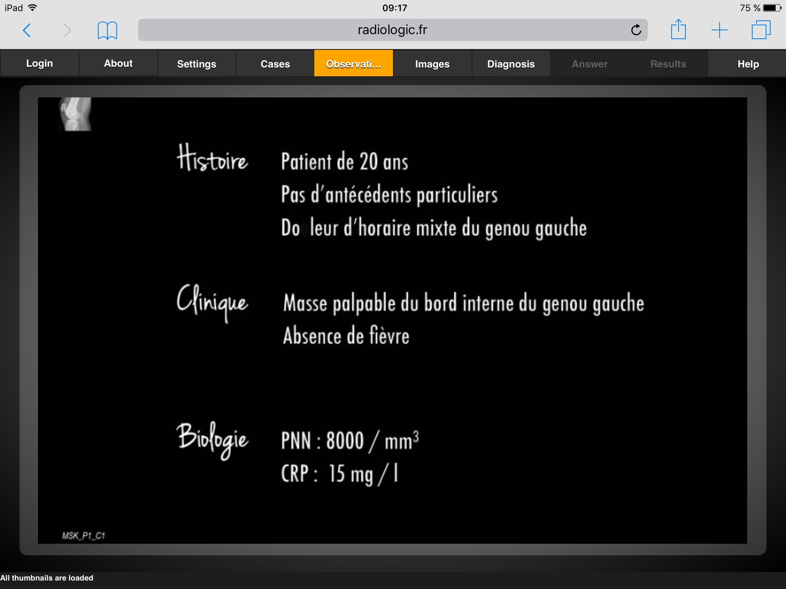Il s'agit du viewer cornerstone modifié avec interface touch. Le viewer est un plugin et pourra être remplacé par un autre outil (video player, photo viewer, ...
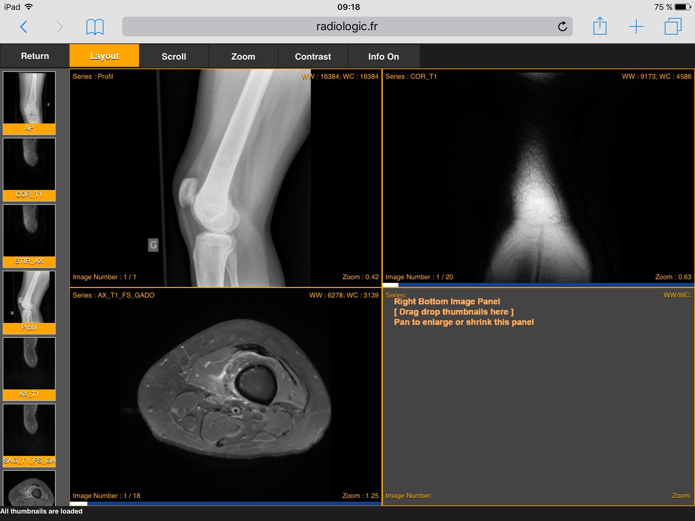 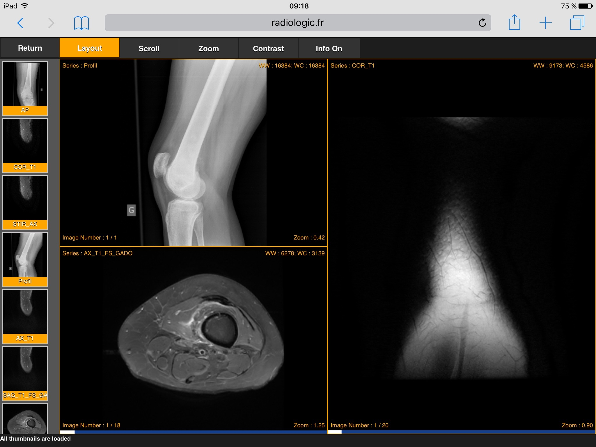 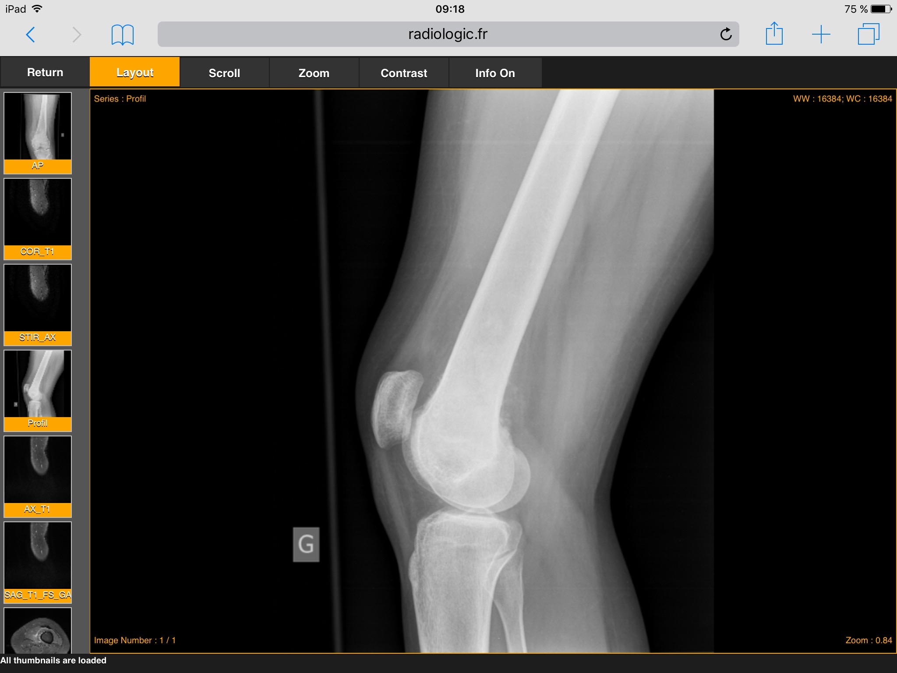Seul un usager enregistré et identifié peut entrer son diagnostic.
 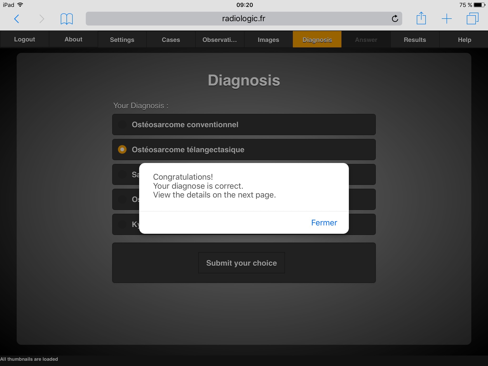
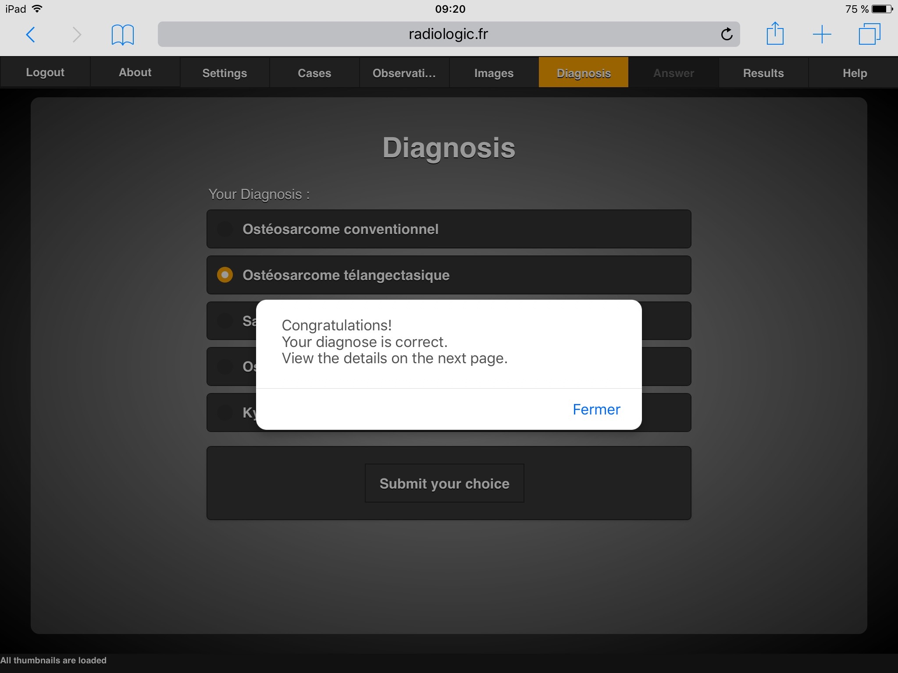
Cette image DICOM contient des tags privés avec la réponse correcte. L'image et les tags privés seront brouillés pour éviter de voir l'image et de lire les metadonnées de réponse dans un viewer DICOM standard.

Un nouveau usager voit une page vide, les résultats sont actualisés après chaque diagnostic et enregistrés dans le navigateur.
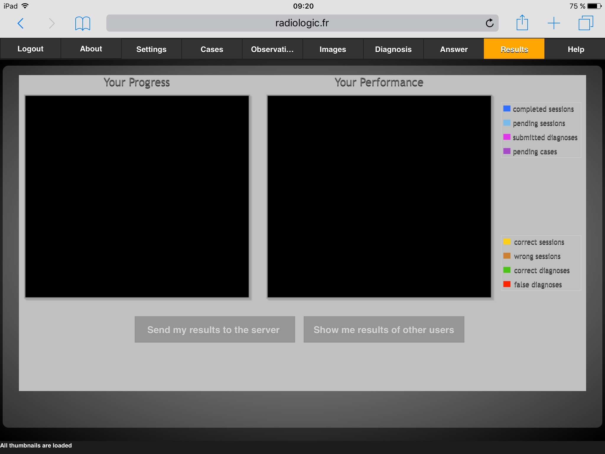 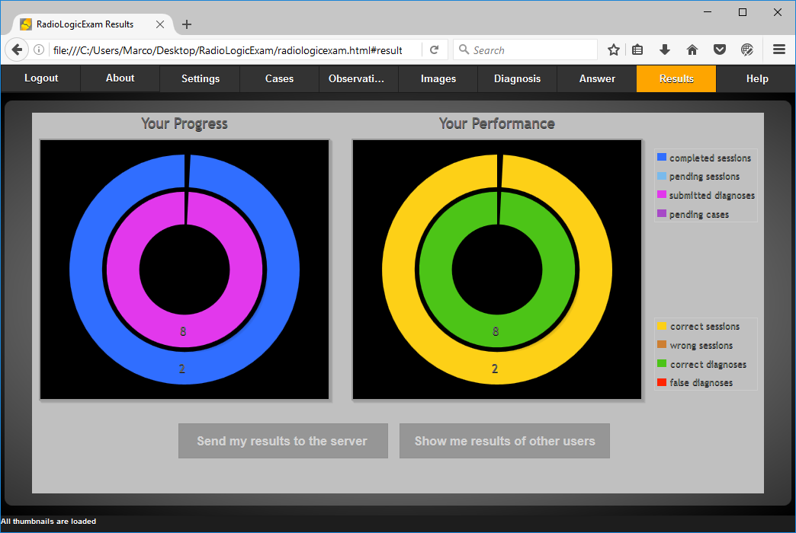Cette page présentera un guide d'usager succint avec un lien vers le RadioLogicHelpBook.
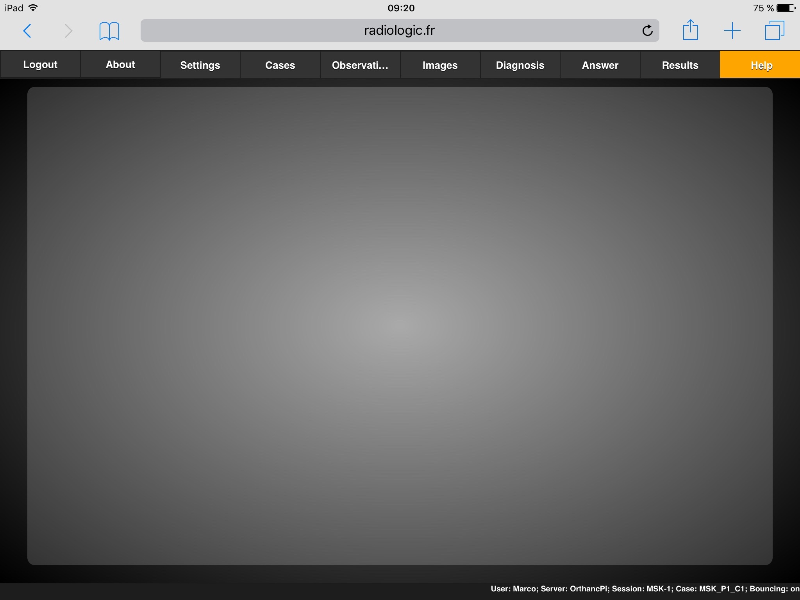